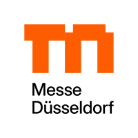
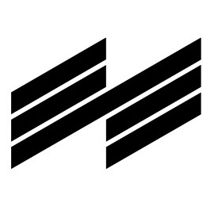

Trade Fair Exhibitor List Scrapers
Map Your Show Exhibitor List Scraper
Web scraper to extract exhibitor data from trade show exhibitor lists
provided by Map Your Show. Get company details and contact person info using this
scraping tool for B2B lead generation and event networking. Supports multiple Map Your
Show trade fair websites with a consistent HTML structure.
Read more
→

Messe Duesseldorf Exhibitor List Scraper
Simple web scraper for extracting exhibitor data from trade show
exhibitor lists provided by Messe Duesseldorf. Extract company details using this
scraping tool for B2B lead generation and event networking. Supports multiple Messe
Duesseldorf trade fair websites with a consistent HTML structure.
Read more
→
Koelnmesse Exhibitor List Scraper
Simple web scraper for extracting exhibitor data from Koelnmesse trade
show exhibitor lists. Extract company details using this scraping tool for B2B lead
generation, event networking, and market research. Supports multiple Koelnmesse trade
fair websites with a consistent HTML structure.
Read more →
Messe Frankfurt Exhibitor List Scraper
Simple web scraper for extracting exhibitor data from Messe Frankfurt
trade show exhibitor lists. Extract company details using this scraping tool for B2B
lead generation, event networking, and market research. Supports multiple Messe
Frankfurt trade fair websites with a consistent HTML structure.
Read more
→

Messe Muenchen Exhibitor List Scraper
Simple web scraper for extracting exhibitor data from Messe Muenchen
trade show exhibitor lists. Extract company details using this scraping tool for B2B
lead generation, event networking, and market research. Supports multiple Messe Muenchen
trade fair websites with a consistent HTML structure.
Read more
→
Nuernberg Messe Exhibitor List Scraper
Simple web scraper for extracting exhibitor data from trade show
exhibitor lists provided by Nuernberg Messe. Extract company details using this scraping
tool for B2B lead generation and event networking. Supports multiple Nuernberg Messe
trade fair websites with a consistent HTML structure.
Read more
→
Xporience Exhibitor List Scraper
Simple web scraper for extracting exhibitor data from trade show
exhibitor lists provided by Xporience. Extract company details using this scraping tool
for B2B lead generation and event networking. Supports multiple Xporience trade fair
websites with a consistent HTML structure.
Read more →
Reed Expo Exhibitor List Scraper
Simple web scraper for extracting exhibitor data from trade show
exhibitor lists provided by Reed Expo. Extract company details using this scraping tool
for B2B lead generation and event networking. Supports multiple Reed Expo trade fair
websites with a consistent HTML structure.
Read more →
GSMA MWC Exhibitor List Scraper
Web scraper to extract exhibitor data from trade show exhibitor lists
provided by GSMA MWC. Get company details and contact person info using this scraping
tool for B2B lead generation and event networking. Supports multiple GSMA MWC trade fair
websites with a consistent HTML structure.
Read more →